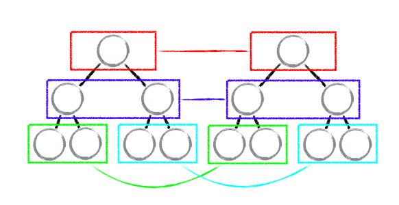

<!DOCTYPE HTML>
<html lang="" >
    <head>
        <meta charset="UTF-8">
        <meta content="text/html; charset=utf-8" http-equiv="Content-Type">
        <title>React Diff 算法 · GitBook</title>
        <meta http-equiv="X-UA-Compatible" content="IE=edge" />
        <meta name="description" content="">
        <meta name="generator" content="GitBook 3.2.3">
        
        
        
    
    <link rel="stylesheet" href="../gitbook/style.css">

    
            
                
                <link rel="stylesheet" href="../gitbook/gitbook-plugin-highlight/website.css">
                
            
                
                <link rel="stylesheet" href="../gitbook/gitbook-plugin-search/search.css">
                
            
                
                <link rel="stylesheet" href="../gitbook/gitbook-plugin-fontsettings/website.css">
                
            
        

    

    
        
    
        
    
        
    
        
    
        
    
        
    

        
    
    
    <meta name="HandheldFriendly" content="true"/>
    <meta name="viewport" content="width=device-width, initial-scale=1, user-scalable=no">
    <meta name="apple-mobile-web-app-capable" content="yes">
    <meta name="apple-mobile-web-app-status-bar-style" content="black">
    <link rel="apple-touch-icon-precomposed" sizes="152x152" href="../gitbook/images/apple-touch-icon-precomposed-152.png">
    <link rel="shortcut icon" href="../gitbook/images/favicon.ico" type="image/x-icon">

    
    <link rel="next" href="React_event.html" />
    
    
    <link rel="prev" href="React_event.html" />
    

    </head>
    <body>
        
<div class="book">
    <div class="book-summary">
        
            
<div id="book-search-input" role="search">
    <input type="text" placeholder="Type to search" />
</div>

            
                <nav role="navigation">
                


<ul class="summary">
    
    

    

    
        
        
    
        <li class="chapter " data-level="1.1" data-path="../">
            
                <a href="../">
            
                    
                    项目简介
            
                </a>
            

            
        </li>
    
        <li class="chapter " data-level="1.2" >
            
                <span>
            
                    
                    框架篇
            
                </span>
            

            
            <ul class="articles">
                
    
        <li class="chapter " data-level="1.2.1" >
            
                <span>
            
                    
                    React
            
                </span>
            

            
            <ul class="articles">
                
    
        <li class="chapter " data-level="1.2.1.1" data-path="react.html">
            
                <a href="react.html">
            
                    
                    React
            
                </a>
            

            
        </li>
    
        <li class="chapter " data-level="1.2.1.2" data-path="React生命周期函数.html">
            
                <a href="React生命周期函数.html">
            
                    
                    React 生命周期函数
            
                </a>
            

            
        </li>
    
        <li class="chapter " data-level="1.2.1.3" data-path="React顶层API.html">
            
                <a href="React顶层API.html">
            
                    
                    React 顶层API
            
                </a>
            

            
        </li>
    
        <li class="chapter " data-level="1.2.1.4" data-path="react-router4.html">
            
                <a href="react-router4.html">
            
                    
                    React-router4
            
                </a>
            

            
        </li>
    
        <li class="chapter " data-level="1.2.1.5" data-path="受控组件和非受控组件.html">
            
                <a href="受控组件和非受控组件.html">
            
                    
                    受控组件和非受控组件
            
                </a>
            

            
        </li>
    
        <li class="chapter " data-level="1.2.1.6" data-path="React_event.html">
            
                <a href="React_event.html">
            
                    
                    React 事件
            
                </a>
            

            
        </li>
    
        <li class="chapter active" data-level="1.2.1.7" data-path="React_Diff算法.html">
            
                <a href="React_Diff算法.html">
            
                    
                    React Diff 算法
            
                </a>
            

            
        </li>
    
        <li class="chapter " data-level="1.2.1.8" data-path="React_event.html">
            
                <a href="React_event.html">
            
                    
                    React 事件
            
                </a>
            

            
        </li>
    
        <li class="chapter " data-level="1.2.1.9" data-path="mobx.html">
            
                <a href="mobx.html">
            
                    
                    mobx
            
                </a>
            

            
        </li>
    

            </ul>
            
        </li>
    
        <li class="chapter " data-level="1.2.2" >
            
                <span>
            
                    
                    Vue
            
                </span>
            

            
        </li>
    

            </ul>
            
        </li>
    
        <li class="chapter " data-level="1.3" >
            
                <span>
            
                    
                    项目篇
            
                </span>
            

            
            <ul class="articles">
                
    
        <li class="chapter " data-level="1.3.1" data-path="react全家桶&&node全栈开发.html">
            
                <a href="react全家桶&&node全栈开发.html">
            
                    
                    react全家桶&&node全栈开发
            
                </a>
            

            
        </li>
    
        <li class="chapter " data-level="1.3.2" data-path="企业级后台电商管理系统.html">
            
                <a href="企业级后台电商管理系统.html">
            
                    
                    企业级后台电商管理系统
            
                </a>
            

            
        </li>
    
        <li class="chapter " data-level="1.3.3" data-path="react16.4简书.html">
            
                <a href="react16.4简书.html">
            
                    
                    react16.4简书
            
                </a>
            

            
        </li>
    

            </ul>
            
        </li>
    
        <li class="chapter " data-level="1.4" >
            
                <span>
            
                    
                    前端工程化
            
                </span>
            

            
            <ul class="articles">
                
    
        <li class="chapter " data-level="1.4.1" data-path="../前端工程化/webpack打包体积篇.html">
            
                <a href="../前端工程化/webpack打包体积篇.html">
            
                    
                    Webpack 打包优化之体积篇
            
                </a>
            

            
        </li>
    
        <li class="chapter " data-level="1.4.2" data-path="../前端工程化/webpack打包速度篇.html">
            
                <a href="../前端工程化/webpack打包速度篇.html">
            
                    
                    Webpack 打包优化之速度篇
            
                </a>
            

            
        </li>
    
        <li class="chapter " data-level="1.4.3" data-path="../前端工程化/Webpack中publicPath详解.html">
            
                <a href="../前端工程化/Webpack中publicPath详解.html">
            
                    
                    Webpack中publicPath详解
            
                </a>
            

            
        </li>
    
        <li class="chapter " data-level="1.4.4" data-path="../前端工程化/webpack打包CSS.html">
            
                <a href="../前端工程化/webpack打包CSS.html">
            
                    
                    webpack打包CSS
            
                </a>
            

            
        </li>
    
        <li class="chapter " data-level="1.4.5" data-path="../前端工程化/自动化部署.html">
            
                <a href="../前端工程化/自动化部署.html">
            
                    
                    自动化部署
            
                </a>
            

            
        </li>
    

            </ul>
            
        </li>
    
        <li class="chapter " data-level="1.5" >
            
                <span>
            
                    
                    设计模式
            
                </span>
            

            
            <ul class="articles">
                
    
        <li class="chapter " data-level="1.5.1" data-path="../JS设计模式系统讲解和应用/设计原则.html">
            
                <a href="../JS设计模式系统讲解和应用/设计原则.html">
            
                    
                    设计原则
            
                </a>
            

            
        </li>
    
        <li class="chapter " data-level="1.5.2" data-path="../JS设计模式系统讲解和应用/面向对象.html">
            
                <a href="../JS设计模式系统讲解和应用/面向对象.html">
            
                    
                    面向对象
            
                </a>
            

            
        </li>
    
        <li class="chapter " data-level="1.5.3" data-path="../JS设计模式系统讲解和应用/工厂模式.html">
            
                <a href="../JS设计模式系统讲解和应用/工厂模式.html">
            
                    
                    工厂模式
            
                </a>
            

            
        </li>
    
        <li class="chapter " data-level="1.5.4" data-path="../JS设计模式系统讲解和应用/单例模式.html">
            
                <a href="../JS设计模式系统讲解和应用/单例模式.html">
            
                    
                    单例模式
            
                </a>
            

            
        </li>
    
        <li class="chapter " data-level="1.5.5" data-path="../JS设计模式系统讲解和应用/适配器模式.html">
            
                <a href="../JS设计模式系统讲解和应用/适配器模式.html">
            
                    
                    适配器模式
            
                </a>
            

            
        </li>
    

            </ul>
            
        </li>
    
        <li class="chapter " data-level="1.6" >
            
                <span>
            
                    
                    工具篇
            
                </span>
            

            
            <ul class="articles">
                
    
        <li class="chapter " data-level="1.6.1" data-path="../tool/git.html">
            
                <a href="../tool/git.html">
            
                    
                    git
            
                </a>
            

            
        </li>
    
        <li class="chapter " data-level="1.6.2" data-path="../tool/gitbook.html">
            
                <a href="../tool/gitbook.html">
            
                    
                    gitbook
            
                </a>
            

            
        </li>
    
        <li class="chapter " data-level="1.6.3" data-path="../tool/编辑器/sublime.html">
            
                <a href="../tool/编辑器/sublime.html">
            
                    
                    sublime
            
                </a>
            

            
        </li>
    
        <li class="chapter " data-level="1.6.4" data-path="../tool/编辑器/vscode.html">
            
                <a href="../tool/编辑器/vscode.html">
            
                    
                    vscode
            
                </a>
            

            
        </li>
    
        <li class="chapter " data-level="1.6.5" data-path="../tool/编辑器/EditorConfig.html">
            
                <a href="../tool/编辑器/EditorConfig.html">
            
                    
                    EditorConfig
            
                </a>
            

            
        </li>
    
        <li class="chapter " data-level="1.6.6" data-path="../tool/shell.html">
            
                <a href="../tool/shell.html">
            
                    
                    shell
            
                </a>
            

            
        </li>
    
        <li class="chapter " data-level="1.6.7" data-path="../tool/命令行工具.html">
            
                <a href="../tool/命令行工具.html">
            
                    
                    命令行工具
            
                </a>
            

            
        </li>
    
        <li class="chapter " data-level="1.6.8" data-path="../tool/yeoman.html">
            
                <a href="../tool/yeoman.html">
            
                    
                    yeoman
            
                </a>
            

            
        </li>
    
        <li class="chapter " data-level="1.6.9" data-path="../tool/网盘搜索引擎.html">
            
                <a href="../tool/网盘搜索引擎.html">
            
                    
                    网盘搜索引擎
            
                </a>
            

            
        </li>
    
        <li class="chapter " data-level="1.6.10" data-path="../tool/how-to-use-mac-efficiently.html">
            
                <a href="../tool/how-to-use-mac-efficiently.html">
            
                    
                    如何优雅的高效使用MAC OSX系统
            
                </a>
            

            
        </li>
    
        <li class="chapter " data-level="1.6.11" data-path="../tool/dash.html">
            
                <a href="../tool/dash.html">
            
                    
                    dash
            
                </a>
            

            
        </li>
    

            </ul>
            
        </li>
    
        <li class="chapter " data-level="1.7" >
            
                <span>
            
                    
                    基础篇
            
                </span>
            

            
            <ul class="articles">
                
    
        <li class="chapter " data-level="1.7.1" >
            
                <span>
            
                    
                    样式篇
            
                </span>
            

            
            <ul class="articles">
                
    
        <li class="chapter " data-level="1.7.1.1" data-path="../css/居中.html">
            
                <a href="../css/居中.html">
            
                    
                    居中
            
                </a>
            

            
        </li>
    
        <li class="chapter " data-level="1.7.1.2" data-path="../css/布局.html">
            
                <a href="../css/布局.html">
            
                    
                    布局
            
                </a>
            

            
        </li>
    
        <li class="chapter " data-level="1.7.1.3" data-path="../css/居中.html">
            
                <a href="../css/居中.html">
            
                    
                    git
            
                </a>
            

            
        </li>
    

            </ul>
            
        </li>
    
        <li class="chapter " data-level="1.7.2" >
            
                <span>
            
                    
                    JS基础
            
                </span>
            

            
            <ul class="articles">
                
    
        <li class="chapter " data-level="1.7.2.1" data-path="../其他基础/函数式编程和面向对象编程.html">
            
                <a href="../其他基础/函数式编程和面向对象编程.html">
            
                    
                    函数式编程和面向对象编程
            
                </a>
            

            
        </li>
    
        <li class="chapter " data-level="1.7.2.2" data-path="../js/this.html">
            
                <a href="../js/this.html">
            
                    
                    this
            
                </a>
            

            
        </li>
    
        <li class="chapter " data-level="1.7.2.3" data-path="../js/promise.html">
            
                <a href="../js/promise.html">
            
                    
                    promise
            
                </a>
            

            
        </li>
    
        <li class="chapter " data-level="1.7.2.4" data-path="../js/日期处理.html">
            
                <a href="../js/日期处理.html">
            
                    
                    日期处理
            
                </a>
            

            
        </li>
    
        <li class="chapter " data-level="1.7.2.5" data-path="../js/跨域.html">
            
                <a href="../js/跨域.html">
            
                    
                    跨域
            
                </a>
            

            
        </li>
    
        <li class="chapter " data-level="1.7.2.6" data-path="../js/闭包.html">
            
                <a href="../js/闭包.html">
            
                    
                    闭包
            
                </a>
            

            
        </li>
    
        <li class="chapter " data-level="1.7.2.7" data-path="../js/深浅拷贝.html">
            
                <a href="../js/深浅拷贝.html">
            
                    
                    深浅拷贝
            
                </a>
            

            
        </li>
    
        <li class="chapter " data-level="1.7.2.8" data-path="../js/js执行机制及异步回调.html">
            
                <a href="../js/js执行机制及异步回调.html">
            
                    
                    JS执行机制及异步回调
            
                </a>
            

            
        </li>
    
        <li class="chapter " data-level="1.7.2.9" data-path="../js/JS设计模式与开发实践.html">
            
                <a href="../js/JS设计模式与开发实践.html">
            
                    
                    JS设计模式与开发实践
            
                </a>
            

            
        </li>
    
        <li class="chapter " data-level="1.7.2.10" data-path="../js/promise.html">
            
                <a href="../js/promise.html">
            
                    
                    Promise
            
                </a>
            

            
        </li>
    
        <li class="chapter " data-level="1.7.2.11" data-path="../js/storage.html">
            
                <a href="../js/storage.html">
            
                    
                    Storage
            
                </a>
            

            
        </li>
    
        <li class="chapter " data-level="1.7.2.12" data-path="../js/对象.html">
            
                <a href="../js/对象.html">
            
                    
                    对象
            
                </a>
            

            
        </li>
    
        <li class="chapter " data-level="1.7.2.13" data-path="../js/数组.html">
            
                <a href="../js/数组.html">
            
                    
                    数组
            
                </a>
            

            
        </li>
    

            </ul>
            
        </li>
    
        <li class="chapter " data-level="1.7.3" >
            
                <span>
            
                    
                    后端基础
            
                </span>
            

            
            <ul class="articles">
                
    
        <li class="chapter " data-level="1.7.3.1" data-path="../js/正则表达式.html">
            
                <a href="../js/正则表达式.html">
            
                    
                    正则表达式
            
                </a>
            

            
        </li>
    
        <li class="chapter " data-level="1.7.3.2" data-path="../其他基础/jwt.html">
            
                <a href="../其他基础/jwt.html">
            
                    
                    jwt
            
                </a>
            

            
        </li>
    
        <li class="chapter " data-level="1.7.3.3" data-path="../其他基础/http/get_post.html">
            
                <a href="../其他基础/http/get_post.html">
            
                    
                    http
            
                </a>
            

            
        </li>
    
        <li class="chapter " data-level="1.7.3.4" data-path="../mysql.html">
            
                <a href="../mysql.html">
            
                    
                    mysql
            
                </a>
            

            
        </li>
    

            </ul>
            
        </li>
    

            </ul>
            
        </li>
    
        <li class="chapter " data-level="1.8" >
            
                <span>
            
                    
                    面试篇
            
                </span>
            

            
            <ul class="articles">
                
    
        <li class="chapter " data-level="1.8.1" data-path="../interview/JS基础知识.html">
            
                <a href="../interview/JS基础知识.html">
            
                    
                    JS基础知识
            
                </a>
            

            
            <ul class="articles">
                
    
        <li class="chapter " data-level="1.8.1.1" data-path="../interview/原型.html">
            
                <a href="../interview/原型.html">
            
                    
                    原型
            
                </a>
            

            
        </li>
    
        <li class="chapter " data-level="1.8.1.2" data-path="../interview/作用域和闭包.html">
            
                <a href="../interview/作用域和闭包.html">
            
                    
                    作用域和闭包
            
                </a>
            

            
        </li>
    
        <li class="chapter " data-level="1.8.1.3" data-path="../interview/异步.html">
            
                <a href="../interview/异步.html">
            
                    
                    异步
            
                </a>
            

            
        </li>
    

            </ul>
            
        </li>
    
        <li class="chapter " data-level="1.8.2" data-path="../interview/JsWebAPI.html">
            
                <a href="../interview/JsWebAPI.html">
            
                    
                    JsWebAPI
            
                </a>
            

            
        </li>
    
        <li class="chapter " data-level="1.8.3" data-path="../interview/ES6.html">
            
                <a href="../interview/ES6.html">
            
                    
                    ES6
            
                </a>
            

            
        </li>
    
        <li class="chapter " data-level="1.8.4" data-path="../interview/virtual_dom.html">
            
                <a href="../interview/virtual_dom.html">
            
                    
                    虚拟DOM
            
                </a>
            

            
        </li>
    
        <li class="chapter " data-level="1.8.5" data-path="../interview/组件化.html">
            
                <a href="../interview/组件化.html">
            
                    
                    组件化
            
                </a>
            

            
        </li>
    
        <li class="chapter " data-level="1.8.6" data-path="../interview/hybrid.html">
            
                <a href="../interview/hybrid.html">
            
                    
                    hybrid
            
                </a>
            

            
        </li>
    
        <li class="chapter " data-level="1.8.7" data-path="../interview/webpack.html">
            
                <a href="../interview/webpack.html">
            
                    
                    webpack
            
                </a>
            

            
        </li>
    
        <li class="chapter " data-level="1.8.8" data-path="../interview/路由.html">
            
                <a href="../interview/路由.html">
            
                    
                    路由
            
                </a>
            

            
        </li>
    
        <li class="chapter " data-level="1.8.9" data-path="../interview/运行环境.html">
            
                <a href="../interview/运行环境.html">
            
                    
                    运行环境
            
                </a>
            

            
        </li>
    

            </ul>
            
        </li>
    
        <li class="chapter " data-level="1.9" >
            
                <span>
            
                    
                    产品篇
            
                </span>
            

            
            <ul class="articles">
                
    
        <li class="chapter " data-level="1.9.1" data-path="../产品/">
            
                <a href="../产品/">
            
                    
                    开源
            
                </a>
            

            
        </li>
    

            </ul>
            
        </li>
    
        <li class="chapter " data-level="1.10" >
            
                <span>
            
                    
                    架构篇
            
                </span>
            

            
            <ul class="articles">
                
    
        <li class="chapter " data-level="1.10.1" data-path="../产品/">
            
                <a href="../产品/">
            
                    
                    开源
            
                </a>
            

            
        </li>
    

            </ul>
            
        </li>
    
        <li class="chapter " data-level="1.11" >
            
                <span>
            
                    
                    其他
            
                </span>
            

            
            <ul class="articles">
                
    
        <li class="chapter " data-level="1.11.1" data-path="../埋点操作文档.html">
            
                <a href="../埋点操作文档.html">
            
                    
                    埋点
            
                </a>
            

            
        </li>
    
        <li class="chapter " data-level="1.11.2" data-path="../兼容性/IE.html">
            
                <a href="../兼容性/IE.html">
            
                    
                    兼容性
            
                </a>
            

            
        </li>
    

            </ul>
            
        </li>
    

    

    <li class="divider"></li>

    <li>
        <a href="https://www.gitbook.com" target="blank" class="gitbook-link">
            Published with GitBook
        </a>
    </li>
</ul>


                </nav>
            
        
    </div>

    <div class="book-body">
        
            <div class="body-inner">
                
                    

<div class="book-header" role="navigation">
    

    <!-- Title -->
    <h1>
        <i class="fa fa-circle-o-notch fa-spin"></i>
        <a href=".." >React Diff 算法</a>
    </h1>
</div>


                    <div class="page-wrapper" tabindex="-1" role="main">
                        <div class="page-inner">
                            
<div id="book-search-results">
    <div class="search-noresults">
    
                                <section class="normal markdown-section">
                                
                                <h2 id="&#x4F20;&#x7EDF;diff&#x7B97;&#x6CD5;">&#x4F20;&#x7EDF;diff&#x7B97;&#x6CD5;</h2>
<p>&#x901A;&#x8FC7;&#x5FAA;&#x73AF;&#x9012;&#x5F52;&#x5BF9;&#x8282;&#x70B9;&#x8FDB;&#x884C;&#x4F9D;&#x6B21;&#x5BF9;&#x6BD4;
&#x7B97;&#x6CD5;&#x590D;&#x6742;&#x5EA6;&#xFF1A;O(n^3)</p>
<h2 id="react-diff">React diff</h2>
<p>React&#x5DE7;&#x5999;&#x7684;&#x5F15;&#x5165;&#x542F;&#x53D1;&#x5F0F;&#x7B97;&#x6CD5;&#x601D;&#x8DEF;&#xFF0C;&#x4F7F;&#x7528;&#x8BD5;&#x63A2;&#x6CD5;&#x5C06;O(n^3)&#x590D;&#x6742;&#x5EA6;&#x7684;&#x95EE;&#x9898;&#x8F6C;&#x6210;&#x975E;&#x6700;&#x4F18;&#x4F46;&#x9AD8;&#x6548;&#x7684;O(n)&#x590D;&#x6742;&#x5EA6;&#x7684;&#x95EE;&#x9898;</p>
<h3 id="diff&#x7B56;&#x7565;">Diff&#x7B56;&#x7565;</h3>
<ul>
<li>web UI &#x4E2D;DOM&#x8282;&#x70B9;&#x8DE8;&#x5C42;&#x7EA7;&#x7684;&#x79FB;&#x52A8;&#x64CD;&#x4F5C;&#x7279;&#x522B;&#x5C11;&#xFF0C;&#x53EF;&#x5FFD;&#x7565;&#x4E0D;&#x8BA1;(tree diff)</li>
<li>&#x62E5;&#x6709;&#x76F8;&#x540C;&#x7C7B;&#x7684;&#x4E24;&#x4E2A;&#x7EC4;&#x4EF6;&#x5C06;&#x4F1A;&#x751F;&#x6210;&#x76F8;&#x4F3C;&#x7684;&#x6811;&#x5F62;&#x7ED3;&#x6784;&#xFF0C;&#x62E5;&#x6709;&#x4E0D;&#x540C;&#x7C7B;&#x7684;&#x4E24;&#x4E2A;&#x7EC4;&#x4EF6;&#x5C06;&#x4F1A;&#x751F;&#x6210;&#x4E0D;&#x540C;&#x7684;&#x6811;&#x5F62;&#x7ED3;&#x6784;(component diff)</li>
<li>&#x5BF9;&#x4E8E;&#x540C;&#x4E00;&#x5C42;&#x7EA7;&#x7684;&#x4E00;&#x7EC4;&#x5B50;&#x8282;&#x70B9;&#xFF0C;&#x5B83;&#x4EEC;&#x53EF;&#x4EE5;&#x901A;&#x8FC7;&#x552F;&#x4E00;ID&#x8FDB;&#x884C;&#x533A;&#x5206;(element diff)</li>
</ul>
<h4 id="tree-diff">tree diff</h4>
<p>&#x7B56;&#x7565;&#xFF1A;&#x5BF9;&#x6811;&#x8FDB;&#x884C;&#x5206;&#x5C42;&#x6BD4;&#x8F83;&#xFF0C;&#x4E24;&#x68F5;&#x6811;&#x53EA;&#x4F1A;&#x5BF9;&#x540C;&#x4E00;&#x5C42;&#x6B21;&#x7684;&#x8282;&#x70B9;&#x8FDB;&#x884C;&#x6BD4;&#x8F83;&#x3002;
&#x65E2;&#x7136;DOM&#x8282;&#x70B9;&#x8DE8;&#x5C42;&#x7EA7;&#x7684;&#x79FB;&#x52A8;&#x64CD;&#x4F5C;&#x5C11;&#x5230;&#x53EF;&#x4EE5;&#x5FFD;&#x7565;&#x4E0D;&#x8BA1;&#xFF0C;React&#x901A;&#x8FC7;updateDepth&#x5BF9;Vitual DOM &#x6811;&#x8FDB;&#x884C;&#x5C42;&#x7EA7;&#x63A7;&#x5236;&#xFF0C;&#x53EA;&#x4F1A;&#x5BF9;&#x76F8;&#x540C;&#x989C;&#x8272;&#x65B9;&#x6846;&#x5185;&#x7684;DOM&#x8282;&#x70B9;&#x8FDB;&#x884C;&#x6BD4;&#x8F83;&#xFF0C;&#x5373;&#x540C;&#x4E00;&#x4E2A;&#x7236;&#x8282;&#x70B9;&#x4E0B;&#x7684;&#x6240;&#x6709;&#x5B50;&#x8282;&#x70B9;&#x3002;&#x5F53;&#x53D1;&#x73B0;&#x8282;&#x70B9;&#x5DF2;&#x7ECF;&#x4E0D;&#x5B58;&#x5728;&#xFF0C;&#x5219;&#x8BE5;&#x8282;&#x70B9;&#x53CA;&#x5176;&#x5B50;&#x8282;&#x70B9;&#x4F1A;&#x88AB;&#x5B8C;&#x5168;&#x5220;&#x9664;&#x6389;&#xFF0C;&#x4E0D;&#x4F1A;&#x7528;&#x4E8E;&#x8FDB;&#x4E00;&#x6B65;&#x7684;&#x6BD4;&#x8F83;&#x3002;&#x8FD9;&#x6837;&#x53EA;&#x9700;&#x8981;&#x5BF9;&#x6811;&#x8FDB;&#x884C;&#x4E00;&#x6B21;&#x904D;&#x5386;&#xFF0C;&#x4FBF;&#x80FD;&#x5B8C;&#x6210;&#x6574;&#x4E2A;DOM&#x6811;&#x7684;&#x6BD4;&#x8F83;&#x3002;
</p>
<pre><code class="lang-javascript">updateChildren: <span class="hljs-function"><span class="hljs-keyword">function</span>(<span class="hljs-params">nextNestedChildrenElements, transaction, context</span>) </span>{
    updateDepth++;
    <span class="hljs-keyword">var</span> errorThrown = <span class="hljs-literal">true</span>;
    <span class="hljs-keyword">try</span> {
        <span class="hljs-keyword">this</span>._updateChildren(nextNestedChildrenElements, transaction, context);
        errorThrown = <span class="hljs-literal">false</span>;
    } <span class="hljs-keyword">finally</span> {
        updateDepth--;
        <span class="hljs-keyword">if</span> (!updateDepth) {
            clearQueue();
        } <span class="hljs-keyword">else</span> {
            processQueue();
        }
    }
}
</code></pre>
<p>&#x5F53;DOM&#x8282;&#x70B9;&#x8DE8;&#x5C42;&#x7EA7;&#x79FB;&#x52A8;&#xFF1A;

A&#x8282;&#x70B9;(&#x5305;&#x62EC;&#x5176;&#x5B50;&#x8282;&#x70B9;)&#x6574;&#x4E2A;&#x88AB;&#x79FB;&#x52A8;&#x5230;D&#x8282;&#x70B9;&#x4E0B;&#xFF0C;&#x7531;&#x4E8E;React&#x53EA;&#x4F1A;&#x7B80;&#x5355;&#x7684;&#x8003;&#x8651;&#x540C;&#x5C42;&#x8282;&#x70B9;&#x7684;&#x4F4D;&#x7F6E;&#x53D8;&#x6362;&#xFF0C;&#x800C;&#x5BF9;&#x4E8E;&#x4E0D;&#x540C;&#x5C42;&#x7EA7;&#x7684;&#x8282;&#x70B9;&#xFF0C;&#x53EA;&#x6709;&#x521B;&#x5EFA;&#x548C;&#x5220;&#x9664;&#x64CD;&#x4F5C;&#x3002;&#x5F53;&#x6839;&#x8282;&#x70B9;&#x53D1;&#x73B0;&#x5B50;&#x8282;&#x70B9;&#x4E2D;A&#x6D88;&#x5931;&#x4E86;&#xFF0C;&#x5C31;&#x4F1A;&#x76F4;&#x63A5;&#x9500;&#x6BC1;A&#xFF1B;&#x5F53;D&#x53D1;&#x73B0;&#x591A;&#x4E86;&#x4E00;&#x4E2A;&#x5B50;&#x8282;&#x70B9;A&#xFF0C;&#x5219;&#x4F1A;&#x521B;&#x5EFA;&#x65B0;&#x7684;A(&#x5305;&#x62EC;&#x5B50;&#x8282;&#x70B9;)&#x4F5C;&#x4E3A;&#x5176;&#x5B50;&#x8282;&#x70B9;&#x3002;&#x6B64;&#x65F6;&#xFF0C;React diff&#x7684;&#x6267;&#x884C;&#x60C5;&#x51B5;&#xFF1A;create A -&gt; create B -&gt; create C -&gt; delete A</p>
<p>&#x7531;&#x6B64;&#x53EF;&#x89C1;&#xFF0C;&#x5F53;&#x51FA;&#x73B0;&#x8282;&#x70B9;&#x8DE8;&#x5C42;&#x7EA7;&#x79FB;&#x52A8;&#x65F6;&#xFF0C;&#x5E76;&#x4E0D;&#x4F1A;&#x51FA;&#x73B0;&#x60F3;&#x8C61;&#x4E2D;&#x7684;&#x79FB;&#x52A8;&#x64CD;&#x4F5C;&#xFF0C;&#x800C;&#x662F;&#x4EE5;A&#x4E3A;&#x6839;&#x8282;&#x70B9;&#x7684;&#x6811;&#x88AB;&#x6574;&#x4E2A;&#x91CD;&#x65B0;&#x521B;&#x5EFA;&#xFF0C;&#x8FD9;&#x662F;&#x4E00;&#x79CD;&#x5F71;&#x54CD;React&#x6027;&#x80FD;&#x7684;&#x64CD;&#x4F5C;&#xFF0C;&#x56E0;&#x6B64;React&#x5B98;&#x65B9;&#x5EFA;&#x8BAE;&#x4E0D;&#x8981;&#x8FDB;&#x884C;DOM&#x8282;&#x70B9;&#x8DE8;&#x5C42;&#x7EA7;&#x7684;&#x64CD;&#x4F5C;&#x3002;</p>
<p>&#x6CE8;&#x610F;&#xFF1A;&#x5728;&#x5F00;&#x53D1;&#x7EC4;&#x4EF6;&#x65F6;&#xFF0C;&#x4FDD;&#x6301;&#x7A33;&#x5B9A;&#x7684;DOM&#x7ED3;&#x6784;&#x4F1A;&#x6709;&#x52A9;&#x4E8E;&#x6027;&#x80FD;&#x7684;&#x63D0;&#x5347;&#x3002;&#x4F8B;&#x5982;&#xFF0C;&#x53EF;&#x4EE5;&#x901A;&#x8FC7;CSS&#x9690;&#x85CF;&#x6216;&#x663E;&#x793A;&#x8282;&#x70B9;&#xFF0C;&#x800C;&#x4E0D;&#x662F;&#x771F;&#x7684;&#x79FB;&#x9664;&#x6216;&#x6DFB;&#x52A0;DOM&#x8282;&#x70B9;&#x3002;</p>
<h4 id="component-diff">component diff</h4>
<p>&#x7B56;&#x7565;&#xFF1A;</p>
<ul>
<li>&#x5982;&#x679C;&#x662F;&#x540C;&#x4E00;&#x7C7B;&#x578B;&#x7684;&#x7EC4;&#x4EF6;&#xFF0C;&#x6309;&#x7167;&#x539F;&#x7B56;&#x7565;&#x7EE7;&#x7EED;&#x6BD4;&#x8F83; virtual DOM tree</li>
<li>&#x5982;&#x679C;&#x4E0D;&#x662F;&#xFF0C;&#x5219;&#x5C06;&#x8BE5;&#x7EC4;&#x4EF6;&#x5224;&#x65AD;&#x4E3A;dirty component,&#x4ECE;&#x800C;&#x66FF;&#x6362;&#x6574;&#x4E2A;&#x7EC4;&#x4EF6;&#x4E0B;&#x6240;&#x6709;&#x7684;&#x5B50;&#x8282;&#x70B9;</li>
<li>&#x5BF9;&#x4E8E;&#x540C;&#x4E00;&#x7C7B;&#x578B;&#x7684;&#x7EC4;&#x4EF6;&#xFF0C;&#x6709;&#x53EF;&#x80FD;&#x5176;Virtual DOM&#x6CA1;&#x6709;&#x4EFB;&#x4F55;&#x53D8;&#x5316;&#xFF0C;&#x5982;&#x679C;&#x80FD;&#x591F;&#x786E;&#x5207;&#x7684;&#x77E5;&#x9053;&#x8FD9;&#x70B9;&#xFF0C;&#x5219;&#x53EF;&#x4EE5;&#x8282;&#x7701;&#x5927;&#x91CF;&#x7684;diff&#x8FD0;&#x7B97;&#x65F6;&#x95F4;&#xFF0C;&#x56E0;&#x6B64;React&#x5141;&#x8BB8;&#x7528;&#x6237;&#x901A;&#x8FC7;shouldComponentUpdate()&#x6765;&#x5224;&#x65AD;&#x8BE5;&#x7EC4;&#x4EF6;&#x662F;&#x5426;&#x9700;&#x8981;&#x8FDB;&#x884C;diff
&#x4F8B;&#x5982;&#xFF1A;
</li>
</ul>
<p>&#x5F53;component D &#x6539;&#x53D8;&#x4E3A; component G&#x65F6;&#xFF0C;&#x5373;&#x4F7F;&#x8FD9;&#x4E24;&#x4E2A;component&#x7ED3;&#x6784;&#x76F8;&#x4F3C;&#xFF0C;&#x4E00;&#x65E6;React&#x5224;&#x65AD;D&#x548C;G&#x662F;&#x4E0D;&#x540C;&#x7C7B;&#x578B;&#x7684;&#x7EC4;&#x4EF6;&#xFF0C;&#x5C31;&#x4E0D;&#x4F1A;&#x6BD4;&#x8F83;&#x4E8C;&#x8005;&#x7684;&#x7ED3;&#x6784;&#xFF0C;&#x800C;&#x662F;&#x76F4;&#x63A5;&#x5220;&#x9664;component D&#xFF0C;&#x91CD;&#x65B0;&#x521B;&#x5EFA;component G &#x4EE5;&#x53CA;&#x5176;&#x5B50;&#x8282;&#x70B9;&#x3002;&#x867D;&#x7136;&#x5F53;&#x4E24;&#x4E2A;component&#x662F;&#x4E0D;&#x540C;&#x7C7B;&#x578B;&#x4F46;&#x7ED3;&#x6784;&#x76F8;&#x4F3C;&#x65F6;&#xFF0C;React diff&#x4F1A;&#x5F71;&#x54CD;&#x6027;&#x80FD;&#xFF0C;&#x4F46;&#x662F;&#xFF1A;&#x4E0D;&#x540C;&#x7C7B;&#x578B;&#x7684;component&#x662F;&#x5F88;&#x5C11;&#x5B58;&#x5728;Dom tree &#x7684;&#x673A;&#x4F1A;&#x7684;&#xFF0C;&#x56E0;&#x6B64;&#x8FD9;&#x79CD;&#x6781;&#x7AEF;&#x56E0;&#x7D20;&#x5F88;&#x96BE;&#x5728;&#x5B9E;&#x73B0;&#x5F00;&#x53D1;&#x8FC7;&#x7A0B;&#x4E2D;&#x9020;&#x6210;&#x91CD;&#x5927;&#x5F71;&#x54CD;&#x7684;&#x3002;</p>
<h4 id="element-diff">element diff</h4>
<p>&#x7B56;&#x7565;&#xFF1A;</p>
<ul>
<li>INSERT_MARKUP(&#x63D2;&#x5165;)&#xFF1A;
  &#x65B0;&#x7684;component&#x7C7B;&#x578B;&#x4E0D;&#x5728;&#x8001;&#x96C6;&#x5408;&#x91CC;&#xFF0C;&#x5373;&#x662F;&#x5168;&#x65B0;&#x7684;&#x8282;&#x70B9;&#xFF0C;&#x9700;&#x8981;&#x5BF9;&#x65B0;&#x8282;&#x70B9;&#x6267;&#x884C;&#x63D2;&#x5165;&#x64CD;&#x4F5C;&#x3002;</li>
<li>MOVE_EXISTING(&#x79FB;&#x52A8;)&#xFF1A;
  &#x5728;&#x8001;&#x96C6;&#x5408;&#x6709;&#x65B0;component&#x7C7B;&#x578B;&#xFF0C;&#x4E14;element&#x662F;&#x53EF;&#x66F4;&#x65B0;&#x7684;&#x7C7B;&#x578B;&#xFF0C;generateComponentChildren&#x5DF2;&#x8C03;&#x7528;receiveComponent,&#x8FD9;&#x79CD;&#x60C5;&#x51B5;&#x4E0B;preChild=nextChild,&#x5C31;&#x9700;&#x8981;&#x505A;&#x79FB;&#x52A8;&#x64CD;&#x4F5C;&#xFF0C;&#x53EF;&#x4EE5;&#x590D;&#x7528;&#x4EE5;&#x524D;&#x7684;DOM&#x8282;&#x70B9;&#x3002;</li>
<li>REMOVE_NODE(&#x5220;&#x9664;)&#xFF1A;
  &#x8001;component&#x7C7B;&#x578B;&#xFF0C;&#x5728;&#x65B0;&#x96C6;&#x5408;&#x91CC;&#x4E5F;&#x6709;&#xFF0C;&#x4F46;&#x5BF9;&#x5E94;&#x7684;element&#x4E0D;&#x540C;&#x5219;&#x4E0D;&#x80FD;&#x76F4;&#x63A5;&#x590D;&#x7528;&#x548C;&#x66F4;&#x65B0;&#xFF0C;&#x9700;&#x8981;&#x6267;&#x884C;&#x5220;&#x9664;&#x64CD;&#x4F5C;&#xFF0C;</li>
</ul>
<h2 id="&#x53C2;&#x8003;&#x8D44;&#x6599;">&#x53C2;&#x8003;&#x8D44;&#x6599;</h2>
<p><a href="https://reactjs.org/docs/reconciliation.html" target="_blank">Reconciliation - React</a></p>

                                
                                </section>
                            
    </div>
    <div class="search-results">
        <div class="has-results">
            
            <h1 class="search-results-title"><span class='search-results-count'></span> results matching "<span class='search-query'></span>"</h1>
            <ul class="search-results-list"></ul>
            
        </div>
        <div class="no-results">
            
            <h1 class="search-results-title">No results matching "<span class='search-query'></span>"</h1>
            
        </div>
    </div>
</div>

                        </div>
                    </div>
                
            </div>

            
                
                <a href="React_event.html" class="navigation navigation-prev " aria-label="Previous page: React 事件">
                    <i class="fa fa-angle-left"></i>
                </a>
                
                
                <a href="React_event.html" class="navigation navigation-next " aria-label="Next page: React 事件">
                    <i class="fa fa-angle-right"></i>
                </a>
                
            
        
    </div>

    <script>
        var gitbook = gitbook || [];
        gitbook.push(function() {
            gitbook.page.hasChanged({"page":{"title":"React Diff 算法","level":"1.2.1.7","depth":3,"next":{"title":"React 事件","level":"1.2.1.8","depth":3,"path":"react/React_event.md","ref":"react/React_event.md","articles":[]},"previous":{"title":"React 事件","level":"1.2.1.6","depth":3,"path":"react/React_event.md","ref":"react/React_event.md","articles":[]},"dir":"ltr"},"config":{"gitbook":"*","theme":"default","variables":{},"plugins":["livereload"],"pluginsConfig":{"livereload":{},"highlight":{},"search":{},"lunr":{"maxIndexSize":1000000,"ignoreSpecialCharacters":false},"sharing":{"facebook":true,"twitter":true,"google":false,"weibo":false,"instapaper":false,"vk":false,"all":["facebook","google","twitter","weibo","instapaper"]},"fontsettings":{"theme":"white","family":"sans","size":2},"theme-default":{"styles":{"website":"styles/website.css","pdf":"styles/pdf.css","epub":"styles/epub.css","mobi":"styles/mobi.css","ebook":"styles/ebook.css","print":"styles/print.css"},"showLevel":false}},"structure":{"langs":"LANGS.md","readme":"README.md","glossary":"GLOSSARY.md","summary":"SUMMARY.md"},"pdf":{"pageNumbers":true,"fontSize":12,"fontFamily":"Arial","paperSize":"a4","chapterMark":"pagebreak","pageBreaksBefore":"/","margin":{"right":62,"left":62,"top":56,"bottom":56}},"styles":{"website":"styles/website.css","pdf":"styles/pdf.css","epub":"styles/epub.css","mobi":"styles/mobi.css","ebook":"styles/ebook.css","print":"styles/print.css"}},"file":{"path":"react/React_Diff算法.md","mtime":"2018-08-02T15:15:56.869Z","type":"markdown"},"gitbook":{"version":"3.2.3","time":"2018-08-18T04:48:50.402Z"},"basePath":"..","book":{"language":""}});
        });
    </script>
</div>

        
    <script src="../gitbook/gitbook.js"></script>
    <script src="../gitbook/theme.js"></script>
    
        
        <script src="../gitbook/gitbook-plugin-livereload/plugin.js"></script>
        
    
        
        <script src="../gitbook/gitbook-plugin-search/search-engine.js"></script>
        
    
        
        <script src="../gitbook/gitbook-plugin-search/search.js"></script>
        
    
        
        <script src="../gitbook/gitbook-plugin-lunr/lunr.min.js"></script>
        
    
        
        <script src="../gitbook/gitbook-plugin-lunr/search-lunr.js"></script>
        
    
        
        <script src="../gitbook/gitbook-plugin-sharing/buttons.js"></script>
        
    
        
        <script src="../gitbook/gitbook-plugin-fontsettings/fontsettings.js"></script>
        
    

    </body>
</html>

